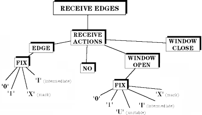

Receive Edges and Actions
The figure below shows the actions that can be associated with receive edges.

You have to define a receive action for every receive edge.
You can assign the following actions to a receive edge: edge comp. splits into the following:
fixed |
compares against a fixed state. This can be:
|
window comp. needs two edges. One to open a window, the other to close it. When you select some type of window compare, the system automatically allocates two edges.
A window open action splits into the following:
fixed |
compares against a fixed state. This can be:
|
no compare performs no comparison.
Note The following general rule is valid across different test processor generations
(ensured by design): minimum distance between a window open and close, 1 nsec is a safe value.
Note that the pin electronics front-end bandwidth might further limit this.